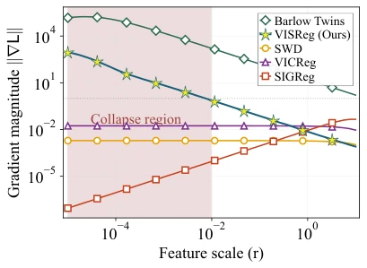
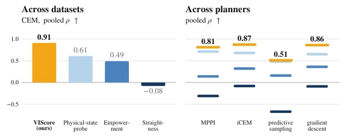
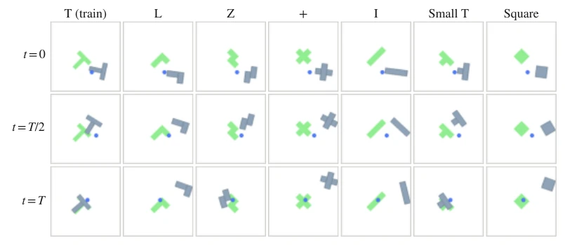
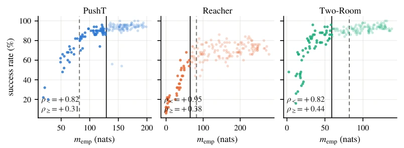

This paper casts doubt on the 'latent space quality' diagnostics for World Models (World Models). The authors find that regularizing the latent space into isotropic Gaussian distributions (such as SIGReg) is useful for self-supervised learning (SSL) but not necessarily effective for planning (Planning). Their proposed VIScore metric attempts to quantify planning-related quality through three dimensions: "Veracity, Influence, and Sobriety". The highlight is that it covers the full pipeline of encoder, predictor, and planner, and has extremely strong cross-task correlation (Spearman > 0.75). But the drawbacks are also obvious: it is a diagnostic tool rather than a performance predictor, high VIScore does not guarantee success (e.g., the counterexample of OGBench-Cube), and it is not applicable to Amortized Planner. Additionally, comparison experiments between SIGReg and VISReg suggest that distribution matching precision is more important than loss function flexibility, which is an interesting signal for the community.
研究动机Motivation
现有世界模型（如LeWorldModel）依赖SIGReg（Balestriero & LeCun, 2025）防止潜空间坍塌，但潜空间属性与规划成功率脱节。现有的诊断指标如Straightness（Wang et al., 2026）、Physical-state probing（Maes et al., 2026）和Empowerment（Klyubin et al., 2005）各有局限：它们往往只关注编码器或预测器，忽略了规划器（Planner）在搜索过程中的幻觉（Hallucination）。例如，Empowerment虽然衡量了动作条件容量，但无法跨任务统一尺度。作者指出，自监督学习的优势不能自动迁移到规划任务，需要一种能同时评估可达性、容量和规划器利用预测器误差能力的指标，以解决“模型训练好了但规划失败”的黑盒问题。
Existing world models (such as LeWorldModel) rely on SIGReg (Balestriero & LeCun, 2025) to prevent latent space collapse, but latent space attributes are disconnected from planning success rates. Existing diagnostic metrics such as Straightness (Wang et al., 2026), Physical-state probing (Maes et al., 2026), and Empowerment (Klyubin et al., 2005) each have limitations: they often focus only on the encoder or predictor, ignoring the planner's hallucinations during the search process. For example, although Empowerment measures action conditional capacity, it cannot unify scales across tasks. The authors point out that the advantages of self-supervised learning cannot automatically transfer to planning tasks; a metric is needed that can simultaneously evaluate reachability, capacity, and the planner's ability to utilize predictor error, to solve the "model trained well but planning fails" black box problem.
The overall process is based on the LeWorldModel architecture, including image encoder, action encoder, and predictor. The core innovation is the VIScore metric, composed of the product of three components. First is Veracity, measuring whether H-step open-loop rollout error is within task success tolerance, mapped to [0,1] via error function, solving the incomparability of different task scales. Second is Influence, restating latent space Empowerment as a sufficiency condition; once action conditional capacity exceeds task needs, it saturates, avoiding blind pursuit of high capacity. Finally is Sobriety, detecting whether the planner can find better "hallucinated" paths inside the predictor than expert actions, preventing the planner from overusing predictor error. Additionally, the paper compares SIGReg and VISReg two regularization losses; VISReg separates center, scale, and shape constraints, allowing finer-grained distribution control; experiments show distribution approximation precision is more important than loss flexibility for OOD planning.

Figure 4: Embedding collapse prevention. We simulate the gradient ||∇L|| of popular regular- ization methods under different collapse stages by changing the feature norm (r). We ob- serve that when the model is collapsed, Barlow Twins Zbontar et al. (2021) and VISReg provide a strong gradient to fix the collapse, whereas SI- GReg Balestriero & LeCun (2025) fails to do so.
Experiments were conducted on four benchmarks: PushT, Reacher, OGBench-Cube, and Two-Room, comparing baselines such as LeWM and DINO-WM. Evaluation metrics include Spearman correlation and Calibration Error (Calibration Error). Results show that VIScore's Spearman correlation always exceeds 0.75 in cross-task evaluation, and it is the only metric with calibration error below the constant predictor. In OOD generalization (unseen object shapes) experiments, VISReg combined with large Batch Size can improve performance. Ablation experiments show that VISReg's flexibility (re-weighting) in SSL is not beneficial for planning, but distribution matching precision is key. Additionally, VIScore performs stably across different sampling planners (CEM, MPPI, etc.), proving its generality as a diagnostic tool, but also notes that correlation may reverse in discrete tasks (such as OGBench-Cube).

Figure 1: Spearman correlation between success rate and existing di- agnostics with different datasets and planners.

Figure 2: OOD PushObj shapes used in Table 4. Replaying the same actions yields different trajec- tories because object geometry changes the dynamics.

Figure 3: Raw empowerment versus planning success. Solid lines mark task-specific knees; the dashed line marks the shared influence cap τ=82.